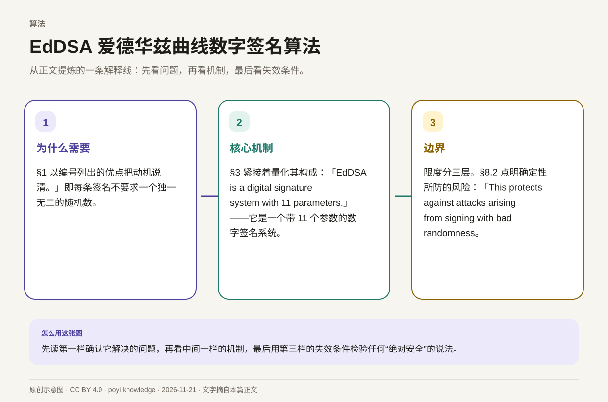
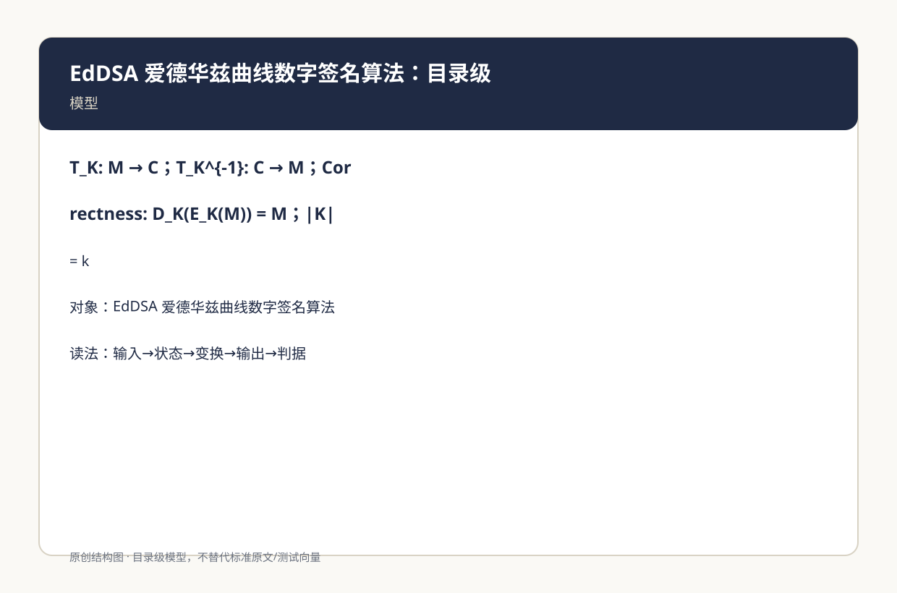

原理与机制
算法：EdDSA Edwards 曲线签名（Edwards-Curve Digital Signature Algorithm）。留存文本在 §1 开篇给出定义：「The Edwards-curve Digital Signature Algorithm (EdDSA) is a variant of Schnorr's signature system with (possibly twisted) Edwards curves.」即 EdDSA 是 Schnorr 签名在（可能经过扭曲的）爱德华兹曲线上的变体。§3 紧接着量化其构成：「EdDSA is a digital signature system with 11 parameters.」——它是一个带 11 个参数的数字签名系统。两句合起来是该条目的原理骨架：签名方案 = Schnorr 结构 + 爱德华兹曲线 + 一组待实例化的参数，参数选择本身由 §3 强调为「not intended to be implemented directly」，落地时取的是具体参数集（如 Ed25519、Ed448）。

为什么重要
§1 以编号列出的优点把动机说清。关于随机性：「The use of a unique random number for each signature is not required;」即每条签名不要求一个独一无二的随机数。关于侧信道：「It is more resilient to side-channel attacks;」。§8.2 解释其成因：「EdDSA signatures are deterministic.」——签名是确定性的， nonce 由密钥与消息导出而非随机取样。三条连读就是选择 EdDSA 的理由：去掉每次签名一个好随机数这一高危依赖，并借统一（complete）公式降低对随机数与分支的敏感性。
应用与实例
§4 用 prehash 参数把变体二分（该词在原文里带 ASCII 引号，此处不引）：「This may be the identity function, resulting in an algorithm called PureEdDSA, or a collision-resistant hash function such as SHA-512, resulting in an algorithm called HashEdDSA.」其下一句落到本文件所指定的实例：「This document specifies parameters resulting in the HashEdDSA variants Ed25519ph and Ed448ph and the PureEdDSA variants Ed25519 and Ed448.」用途因此是这五个参数化变体：PureEdDSA 的 Ed25519/Ed448 与 HashEdDSA 的 Ed25519ph/Ed448ph（另含带上下文的 Ed25519ctx）。措辞为 may，说明 prehash 取恒等还是取抗碰撞哈希是实现方在两类属性（碰撞韧性 与 单遍签名接口）之间的取舍，而非本文件封死的清单。

边界与攻击面
限度分三层。§8.2 点明确定性所防的风险：「This protects against attacks arising from signing with bad randomness; the effects of which can, depending on the algorithm, range up to full private key compromise.」即随机数不佳可致私钥完全泄露——这是被规避的失效模式，而非 EdDSA 自身的攻击面。§8.4 处理可延展性：「Ed25519 and Ed448 signatures are not malleable due to the verification check that decoded S is smaller than l.」——靠解码后的 S 小于 l这一验证检查排除签名延展。§1 给出根本边界：「A sufficiently large quantum computer would be able to break both.」即足够大的量子计算机可破解 Ed25519 与 Ed448（二者对量子计算的脆弱性在 §8.5 被描述为基本相同）。三条合说：确定性防随机数误用、验证检查防延展、而量子计算是其明文承认的失效前提。
历史与背景
门面板块把文件身份与力度一并印明。标题行印作 Edwards-Curve Digital Signature Algorithm (EdDSA)，作者行为 Josefsson 与 Liusvaara，日期行为 January 2017，头部一行印 Request for Comments: 8032 与 Category: Informational（这些头部行本身可在引号外复述）。其状态声明按原句为：「This document is not an Internet Standards Track specification; it is published for informational purposes.」并附 IRTF 定性：「Documents approved for publication by the IRSG are not a candidate for any level of Internet Standard; see Section 2 of RFC 7841.」两句都在 Abstract/Status 块内报为同一节。力度据此是 informational，而非标准轨；该条目因此把上面各句当作对方案的描述性记载，不据 RFC 8032 断言 Internet Standard 级别的强制。
逐步示例与核验
形式模型与复算步骤
[s=k^{-1}\big(H(m)+r d\big)\bmod n]
EdDSA Edwards 曲线签名的公开参数、密钥/随机数与消息；变量说明：k 一次性随机数，r 为承诺点横坐标，d 私钥，n 子群阶。1.选择随机 k，计算 R=kG 与 r。2.计算 s=k^{-1}(H(m)+rd) mod n。3.输出 (r,s)，验证者检查签名方程。边界：公式只覆盖已登记的参数与假设；参数取值、标准版本和实现细节仍以来源为准。
参考出处
- Wikipedia search entry for EdDSA Edwards 曲线签名. https://zh.wikipedia.org/w/index.php?search=EdDSA%20%20Edwards%20%E6%9B%B2%E7%BA%BF%E7%AD%BE%E5%90%8D
- Handbook of Applied Cryptography (Menezes, van Oorschot, Vanstone). https://www.cacr.math.uwaterloo.ca/hac/